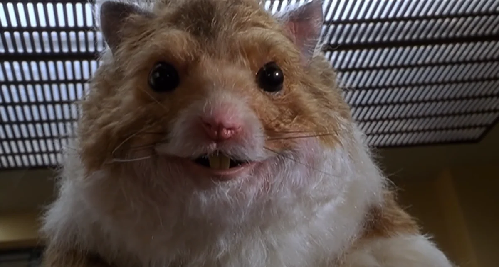

O spécimen vem se comportando de maneira adequada nos primeiros minutos, agindo de forma passiva com os tutores. Apesar de ter componentes de vírus não divulgado devido a seu aspecto, vulgo infecção, não emitiu efeitos colaterais dos mesmos.
Esudos seguem avançando, notando ações que seu corpo se advertem a modificações com o vírus imbutido em si. O Experimento está sob constante observação, principalmente sendo nosso primeiro e único experimento bem sucedido até agora, tendo estranhos costumes de bipolaridade frenética.
(rasurado)
Maurisio tende a comprometer benefícios ao Centro de Pesquisa e Desenvolvimento para assim gerarmos alguma espécie de arma biológica, que possa ser capaz de "transformar" opositores em nossa espécie. Portanto, a parte prática não está definida, ainda, já que os opositores podem utilizar do mesmo método, isso que particularmente não esperamos...
(documento rasurado)
